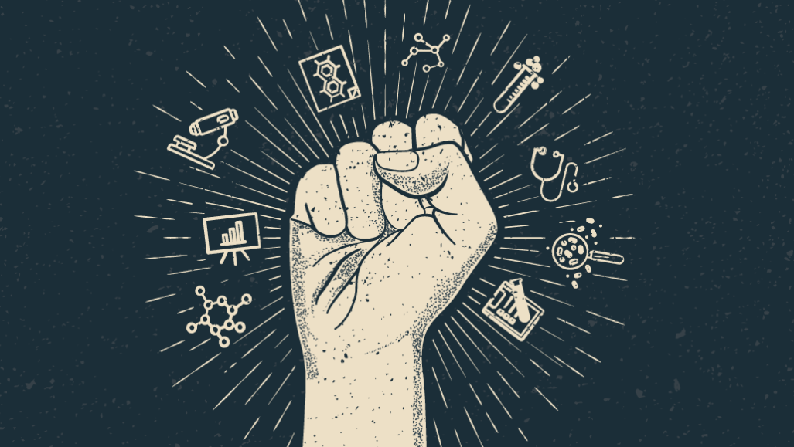

Science has been a great tool that has helped humans throughout history. It has evolved greatly and it keeps on ameliorating. Before, constructing machines or devices used to cost lots of money, but now there are cheap and complex devices of great reliability that are available, and many great creations have come out of them. Some great inventions revolve around mediums recording human thought. For example: photography. There have been many advancements in photography in which the author goes into great detail. Furthermore, the author talks about a machine called “Voder” which requires someone to stroke its keys and it emits recognizable speech. In the process, nobody inserted human vocal chords into the machine. The keys combined electrically produced vibrations and then projected them to a speaker. Another invention that is possible to create is a machine that will manipulate premises in accordance with formal logic. Since logic can be hard to understand, this invention would be great in order to have a more structured view of logic.
The Web is essential - you, your community, and your business depend on it. It is unifying, as many people are connected more than ever before but also in the way it is designed. Universality is a foundation of the Web. This means that people must be able to post anything on the Web regardless of which computer they have, which software they use, the language they speak, and if they have wired or wireless internet connection. Another great thing about the Web is that you do not need any permission to post something on the web, which is called decentralization. This is also part of open standards, which refers to when people are not charged for using a website and also do not need permission to post anything on the Web. The author states that open standards drive innovation, because it is easy to make it dynamic and interact with links. However, not everybody uses open standards. Itunes uses a close standard, which means that you are no longer on the web. You cannot share links to songs, etc. Therefore the author states, “no matter how pleasing, can never compete in diversity, richness and innovation with the mad, throbbing Web market outside their gates” (Berners-Lee).
There are many negative ways in which the web can be used. For example, governments can snoop on its citizens' access information illegally by looking at a person’s search history. Therefore, the author urges its users to protect the web’s basic principles in order to continue to use it and for innovation to continue.